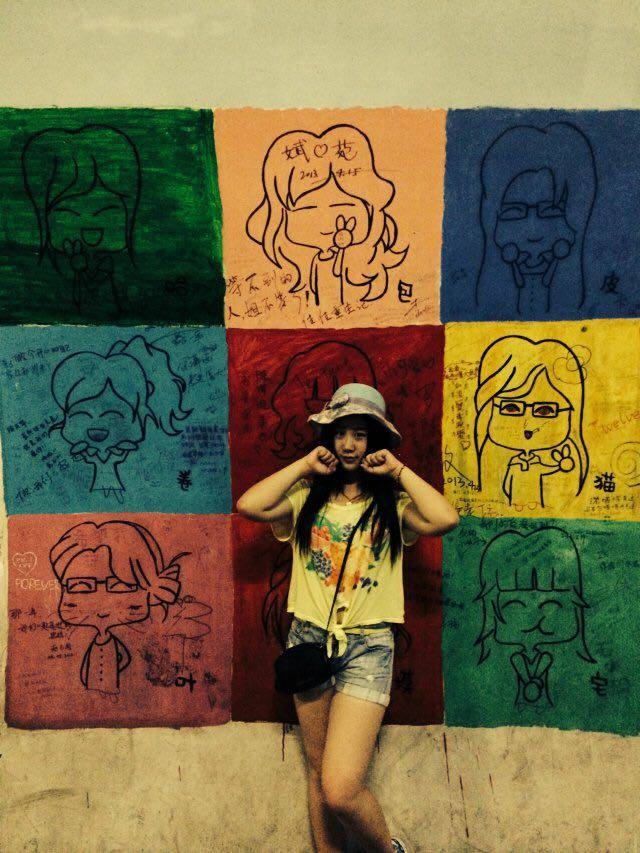
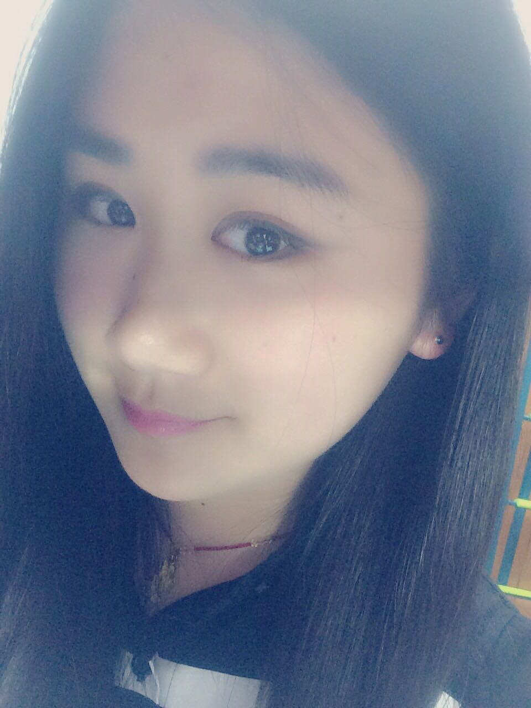
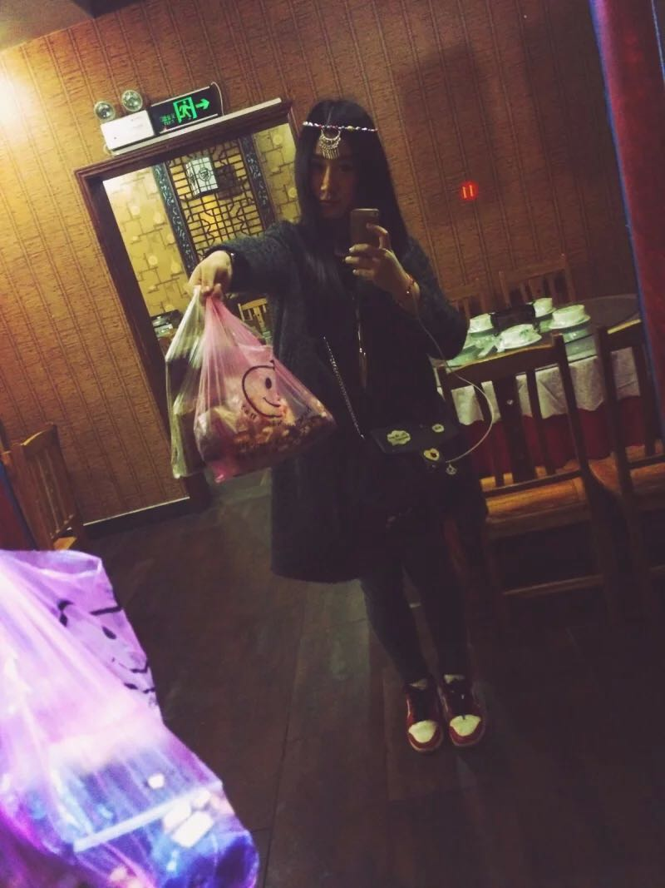

正文: 我本来想把我长胖的故事告诉你，然后把图一张一张贴出来各种咆哮还要顺带回忆自己各种减肥的经历，可是直到我长到130，发现我已经懒得去回忆了。
分割线。决定填个坑好了。相比较知乎里面那么多牛逼哄哄的人。我可能只有在增重这方面有发言权和实时体会经历了。好的。开始。
小时候答主是学跳舞的。学了很多年 所以小时候还是有点点“小朋友舞者”气质的～
有段时候记得特意去模仿杨红樱书里淘气包马小跳的学跳舞的“气质”女主角
学芭蕾，所以走路挺胸抬头塌腰走路向外迈八字～！
请告诉我我不是一个人！
被当时特别红的杨红樱系列图书影响也那么高傲的走路～换用现在的话来说 就是小姑凉的骄傲与自信（高冷）
那么。导致记忆里一直不是特别胖挺匀称的。跳舞的照片就不上了。比赛参加了不少，舞蹈也跟风考了满级。直到初二彻底退出芭蕾舞蹈形体圈，答主我的发胖史就算伴随着青春发育的色彩正式拉开序幕了。
2010年暑假。初二。其实我一直就不瘦。属于大家口中很匀称的。骨架大。家里没吃不胖的基因。都不瘦。这也是为什么我妈在那么早以前就送我去学跳舞的原因。希望我不会发胖太快
这个格子衣服的背影是我。初三苦读考高中。营养很跟得上。当时毕业时我比初二以前长胖了一大圈。同一件格子衫穿起来感觉完全不一样的感觉至今还记得那个呼吸肚子会抵到系腰的带子的感觉……然后8月拍了一个十分难看且坑爹的艺术照
看到这张图。当时好多人评论说：
你的腰这么细！羡慕！
唯独我一男生同桌说：你初三明明是我看着你长胖的这图绝对深呼吸憋着吧。。并且照这个趋势下去，高中你会胖更多。绝对的……
啊摔～马丹呀！被他发现了！果然是同桌嘛！！？！
然后初三毕业。我暑假养膘。上高一前终于到了106！当时和爷爷去旅游，无时不刻不感受到自己体质的改变。以及旧衣服的不同的松紧度！去宜昌爷爷家，突然意识到自己真的胖了。当时很苦恼！
现在留下来的照片很多没有那么显胖。稍微选了一下贴的几张能看出明显肚子痕迹的，还有小粗腿。这是当时最胖的时候，我觉得相比原来的感觉，夏天穿衣服才发现突然长胖的人生不能更苦逼了。感觉差别真的自己知道！很大！
啊摔…初三暑假我不相信同桌的话，后来他说的太对了。因为。更恐怖的才刚刚到来。
高一军训完 我创了新低102 当时很匀称 还记得那个小腿。曾经有个图的。相比暑假变得很直很喜欢。。。。。。
蓝后呢
2012年2月末。住院。初一110左右吧
看到没有。开始有虎背熊腰的趋势了。虽然当时我一点感觉都没有。并且这个医院是那个初中同桌他老爸开的。后来高中每次我去那儿看病。他老爸就捋着他那超级茂盛的胡子 这里我没有夸张……说：几天不见，又长好了呀
嘿！你这高中营养跟的不错呀，又长好了呢。
咦！高中压力很大吧，快到考试了，虽然长得挺好，还是被传染感冒了呢～
吧啦吧啦。这只是其中的一个典型代表而已！
尤记我高一回母校看老师，班主任上来就是一句：呀！高中很辛苦吧！熬夜了吧！这长胖了好多！我都没认出来呢！
然后语文老师，数学老师，各种老师都说我长胖了。记得当时回去我借手机发了条状态：一天之类。连续十x个人说我长胖了。好伤心。 具体数据不记得了。
题外话：咳咳。答主曾经是老师们特别喜欢的那种学生。原因是因为我上课永远坐的特别端正！！咳。可能跟学舞蹈有关………
不对！毕竟答主作为班长曾经，请注意是曾经。。是那么热爱学习的优秀儿童！所以老师们记得我嘛啊摔～
还是医院，高一的时候。这时候，羽绒服是吸铁石的扣子。它已经不能自动扣拢了……
2012年5月…五一假
照的好瘦。但是当时我们全家已经在纠结我怎么突然长胖了很多这个问题。买衣服很纠结。
2012年8月
初中同学聚会。我记得那天我试了好多好多套衣服。就看哪一套最不显胖。最后穿了一身黑。加上一条纯白当时觉得特别喜欢的很贵的裤子 黑历史…114斤这个时候已经很明显没有锁骨了…然后脸大了一圈。我还自作主张背着妈妈鼓起勇气换了发型弄了个刘海遮脸…第三张乱入。不过是同时期的。那是我最喜欢的一件t。材料很好穿起来很舒服当时真的很喜欢的。妈妈当时不让我穿了。说我不懂收腹。穿起来肚子鼓鼓的特别难看。然后某天陪朋友去买十字绣。我还是任性的穿了它并且憋着肚子照了那张图……现在还有深深的回忆…
现在回想起来
那是对一件体恤多么深沉的爱呀。答主想象力太丰富。发到这里情不自禁
突然脑海蹦出一句
啊～多么痛的领悟～你曾是我的禁锢～
咳咳。联想完毕。回到正题
同是高一暑假 我还参加了一个街舞表演118斤
当时暑假去学爵士舞 就是为了减肥
结果第一次跳爵士舞，好像还有点意思成了领舞般的存在。
这也为我后来高二跳爵士搞社团办晚会排节目打比赛搞烂成绩打下了深厚的兴趣基础。。。啊摔！
作为一个胖子。我凭借浓烈的兴趣爱好与对舞社发展的无限憧憬与激情创新想法在街舞社慢慢站稳了脚跟。于是开学不久以后
我们代表高中回初中母校进行志愿者启动仪式表演。学校安排排了一个舞。对没错！
第一图最左边的就是我！穿的楼上第三张那个t。外面的背心是哥哥和我一起挑选的当时特别中意的款式…一般情况由于加冷加热不实用并且是“大人”店买的衣服…我妈都不让我穿！答主又想象力丰富了突然在脑海里呈现出灰姑娘的“好”麻麻～联想完毕。
然后看我第二图看食物的眼神。那个专注与向往的程度。要是放在高考上。我现在肯定就在理想的北京就读了。
题外话：直到高三以前，我的衣服鞋子搭配都没有很拉风很叛逆过，一直比较听妈妈的话，初中穿运动装，高中休闲款。我会说直到初二我才第一次去美邦以纯这种当时在我们那儿都是校服了的“青少年”服装的店试衣服并且我家大人还各种觉得成熟不让买嘛！～～记忆中我的青春买衣服总是充斥着六个字：太成熟，不行，换。 当时我和我妈欣赏水平很不同。我比较跟风。故作成熟。现在想想还好大部分情况都听了我妈的，虽然没赶上当时学校里最拉风最时尚的潮流包括什么短裙丝袜小高跟啊之类的一些拉风少女们的穿着。现在看来我妈用衣服的禁止的方式阻止了我正式奔向那群小太妹。。。。好复杂啊说不清楚
2012年12月
高二 学校元旦“晚会”126斤！！！当时爆表了的数字。但是我没有悲伤。因为。我习惯了。。。高中一年长十斤 高一106高一元旦晚会跳舞116当时买表演服还拼命减肥了。结果越来越胖。不想回忆了。我整个高中无时不刻不在想着减肥。高二元旦晚会新高度：126虽然是领舞。街舞社女队也一直是我的教学每晚晚饭时间辛苦上课很辛苦！但是。我真的没瘦！！！！！
然后。我高三了。高考之前。最后一次旅游。这个图我已经封存了啊。现在作为一只个别人口中的“女神（jing）”这些图是很毁的耶～
whatever!要正视自己！认不清现实，永远活在幻想与自我满足觉得还好还好里。那人真是没用了还怎么进步啊。
所以。爆出来好了。
我真勇敢。这个相册我已经封存了。当时真的没意识到自己这么胖了。真的没意识到。高三嘛。湖北考生嘛。希望你们懂的人懂得！！！
最后高考前几天。毕业照。
在试了n套衣服后。我妈给我敲定了一套我最不喜欢的衣服。她说让我相信她这样照出来不会那么胖。

妈呀。牵扯的人太多了。真是看哭。
转眼就毕业了。高考完第一个星期，终于我妈不再恶补营养不再阻止我减肥，加上是夏天。我去做汗蒸个瑜伽。
第一个星期我就瘦了7斤。不过现在知道那都是水分而已啦。然后暑假第一个月认真减肥。夏天嘛。于是就好了很多…高考前一个月我妈送饭活活把我催胖了很多很多。简直就是虎背熊腰虽然我自己还不知觉！！！
暑假去厦门旅游。不知道为什么。高考完了。开始注意了。其实还是很胖。但是相比高考毕业照。强好多……
 所以果然搭配很重要咯。或者说。围度很重要。165的身高。当时是122斤左右。应该是125吧。
所以果然搭配很重要咯。或者说。围度很重要。165的身高。当时是122斤左右。应该是125吧。可能自拍不显胖。就算你不修图不用美颜美肤！依然不会显胖！这是真的！万恶的前置摄像头啊摔！！！！
所以不要自拍了！
不要自拍了！
不要自拍了！
重要的事说三遍！！
整个暑假每次上传照片都很多人关注。然后我也觉得自己没那么胖了，又不注意节食了。到了大学。没有很多约束。好吃的又多。开始吃东西无节制。开始时感觉自己很自由。就是这个样子的
当时好多人说我瘦了瘦了！
然后我觉得自己在跳舞消耗挺大所以吃的更多！然后！
这是参加某比赛。以为自己很瘦呢！！！
另一个比赛。决赛的时候。真的不知道自己又在长胖。
就继续吃！！！到了大一学期末138斤。。。。。寒假回家。妈气死了。说。寒假。不瘦15斤。你别跟我去上学！看图不像奔140的人吧！又没有170只有166可是。我要来撕裂现实了！！！够了。我要去减肥了。今天的健身任务完成了。现在不求体重。只要慢慢减。我知道不坚持三个月的减肥都是耍流氓。寒假认真运动现在结实很多。双下巴消了一些。虽然没达到之前比赛时那个下巴的效果。不过我现在减肥健身给我带来的心理和认知上的改变。让我成熟了很多。
为了“尽可能”节约大家的流量。答主已经删除很多没意义的“自拍”图了。更多的是留下一些有借鉴意义符合题意能真实反映出答主长胖史的照片。
答主大一上学期长胖了15斤 大学一去，由于文艺方面和社团都有底子了解它的背后运转所以面试啊军训啊各种活动啊都有点点顺利导致自己感觉有点良好（其实就是开始骄傲了）以为自由就是想做啥做啥。后来才发现自律者才会有自由。
当一个人缺乏自律的时候，她做的事情总是在受习惯和即时诱惑的影响，要么就是被他人的思想观念所扰，几乎永远不可能去做内心真正渴望的事
上学越往期末越来越笨蛋没有原则做事拖拉混日子得过且过什么都无所谓快颓废空无荒凉冷漠到迷失自己高冷无趣冷淡没礼貌情商低了所以暴饮暴食也长胖了，当然还归功于我当时谈了人生中第一场“恋爱”，帅帅的qian男友也是让自己又爱又恨暴饮暴食。不过现在我已经回归了开心快乐有安排有规划有思想有想法能坚持有原则爱整洁会理财不贪嘴抗诱惑的betterme 不对 那是目标 我还只是在路上而已 不过 相信暑假见我我又是一个形象啦！ 就不是妈妈打击我的说我又丑又胖又懒又笨的我咯哈哈哈！
我是要成为精致感恩独立有余力能爱人生活有品质的女人的青少女
答主现在正在努力健身减肥，每天有做insanity和t25 还练练舞 跑跑跑步机 正在多方面了解更多关于减脂健身的知识 哦对了。连续运动一个月了，体重没下来。但是围度有改变。自寒假后很久不拍照了，把上周另外打了一个耳洞拍照给妈妈看汇报一下的图附一张好了。我长大后由于矫正了牙齿取了牙齿下巴变尖了所以拍照找好角度隐藏起双下巴脸不那么圆
这叫：论自拍的演员修养～哈哈哈
关于评论里突然有人说我修图修的五官都歪了 我觉得自己心智不够成熟看了真的很委屈，挺难受的。故也删除了很多照片。呵。
不过大多评论里还有那么多人支持我。鼓励我坚持锻炼。真的很感动。谢谢谢谢。真心话。

好了。说完了。这是我知乎来了这么久最有权力回答的一个问题。对了。我还在缓慢的健康减肥中
20150408清明节回来更新一小段
清明第一次一个人出去旅行了
突然决定去旅游 于是随便找了个地儿（长沙）买了火车票就走了
去的路上决定干脆去凤凰也逛一圈
就在去的路上把去凤凰的来回票也搞定了
给大家汇报一下现在和去厦门玩的时候暑假差不多重的我 因为独自出行所以自拍和风景照比较多 这里发各种请别人拍的照片 也就是全身照咯最后上
看到没 所有自拍都是在吃
都是在吃！
不吃就不拍星人～经过很多心里斗争最后决定这几天确实好好放纵好了！吃回了一个月的量好嘛～
好了 现在已经回来继续上学 我又要开始运动 注意饮食咯 没事儿～继续加油～晚上跑步去～
祝我逆袭成功吧兄弟们！！！！啊哈哈哈哈！
再见揍作业去了～